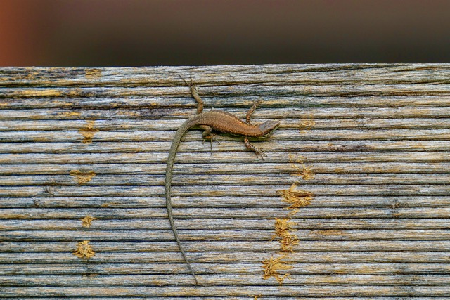

Unser Naturgarten
🦋🦋 Pro Natura "Bonjour Nature" – 2 von 3 SchmetterlingenUnser Garten ist im Rahmen der Aktion "Bonjour Nature" von Pro Natura zertifiziert und wurde mit 2 von 3 möglichen Schmetterlingen ausgezeichnet. Statt eines aufgeräumten Rasens findet man bei uns naturnahe Strukturen: heimische Wildstauden, Totholz- und Steinhaufen, ungemähte Ecken und Wasserstellen – alles Lebensraum für unzählige Pflanzen und Tiere. Den Eintrag mit allen Details könnt ihr direkt auf Bonjour Nature ansehen.
Wie der Garten entstanden ist
Schritt für Schritt haben wir Teile des Gartens in wilde Ecken verwandelt: weniger mähen, mehr heimische Pflanzen, Strukturen wie Asthaufen und Trockenmauern für Kleintiere, und Verzicht auf Pestizide und Kunstdünger. Das Ziel ist ein Garten, der nicht nur uns, sondern vor allem Insekten, Vögeln und Amphibien Lebensraum bietet.
Bilder aus dem Garten
Eindrücke aus verschiedenen Ecken unseres Naturgartens.
Gartenübersicht
Wildblumenbeet
Totholzhaufen
Teich / Wasserstelle
Pflanzen & Tiere
Wildpflanzen und Wildtiere, die sich bei uns eingefunden haben.

Wildpflanze
Schmetterling
Wildbiene
Vogel / Amphibie